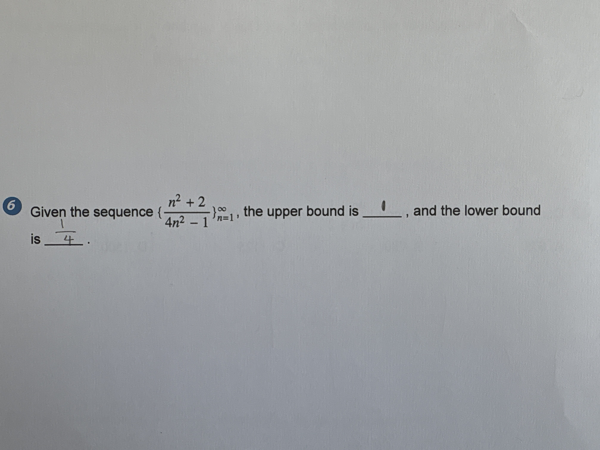

Algebra Quadratic & Polynomial Functions

Given the sequence $\{ \frac{n^2 + 2}{4n^2 - 1} \}_{n=1}^{\infty}$, the upper bound is ______, and the lower bound is ______.
upper bound is $1$, lower bound is $\frac{1}{4}$
upper bound is $1$, lower bound is $\frac{1}{4}$
To find the upper and lower bounds of the sequence $a_n = \frac{n^2 + 2}{4n^2 - 1}$ for $n = 1, 2, 3, \dots$, we look at the behavior of its terms: 1. **Calculate the first term ($n=1$):** $a_1 = \frac{1^2 + 2}{4(1)^2 - 1} = \frac{1 + 2}{4 - 1} = \frac{3}{3} = 1$. 2. **Check the trend of the sequence:** By evaluating the next term ($a_2 = \frac{2^2 + 2}{4(2)^2 - 1} = \frac{6}{15} = 0.4$), we can see that the sequence is decreasing. Since it starts at $1$ and decreases, the upper bound is $1$. 3. **Find the limit as $n$ goes to infinity:** As $n$ gets very large, the $n^2$ terms dominate. $\lim_{n \to \infty} \frac{n^2 + 2}{4n^2 - 1} = \frac{1}{4}$. Because the sequence decreases toward this value without ever passing it, the lower bound is $\frac{1}{4}$. The student's answer is correct.